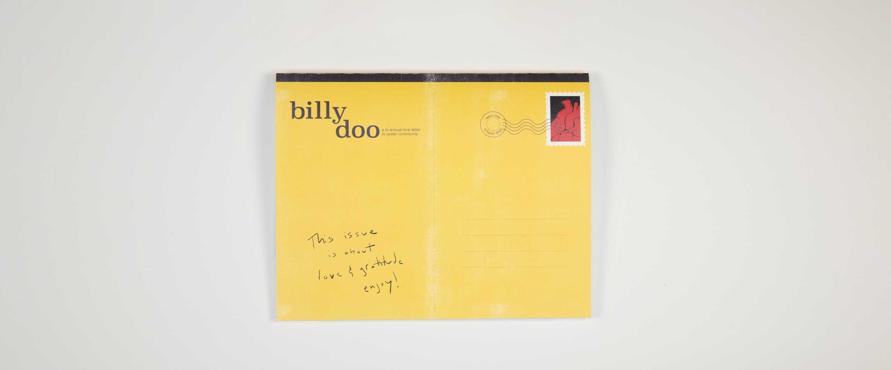
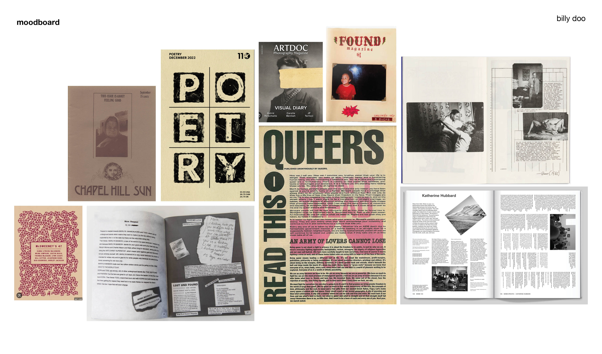

As queer (lgbtqai2s+) culture becomes more present in the mainstream, our identities and aesthetics have become marketable products, broken into sound bytes, and disconnected from whole human experiences, our histories, lineages, and communities.
Intergenerational storytelling is uniquely important for queer identified folks given issues of access to stories when “identity-relevant knowledge is often erased, silenced, or distorted in mainstream public discourses (e.g., school curricula, news media, television, and film).” need citation here.
Can I create a magazine/archive that counters the commodification of queerness by instead cultivating community connection through the opportunity to share and be seen as our more full and authentic selves outside of capitalism, social media, and celebrity culture.
Researching inspiration and like minded projects:
I created a moodboard based on these like-minded projects; as well as content that captured the tactile handmade, print, and ephemera feel I was interested in.

moodboard
Taking its name from Polari vocabulary (secret slang developed by queer ancestors and used primarily from the 1920s-1970s), billy doo means, ‘love letter’ and I wanted each issue to feel like a love letter to queer community.
workmark
I chose superclarendon as the font for the wordmark- a slab serif that feels bold and powerful yet also playful, and Helvertica Neue to bring uniformity and legibility to the subtitle.
Leaning into the concept of a letter, I explored cover concepts for the zine hoping to break out of the more traditional magazine masthead.
info info info
Drumming up interest in the zine and getting submissions was by far the most difficult part of this project. I had a 3 week window to get submissions before the zine would have to go to the printer to be back in time to document for this! I knew this would be a tight window but hadn’t realized just how much time and emotional work it would take to promote the idea.